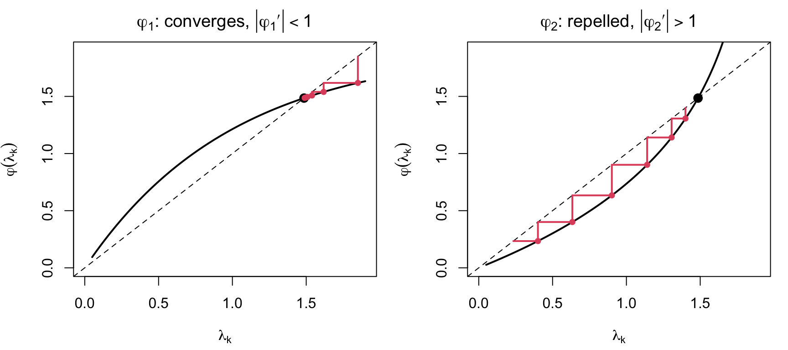
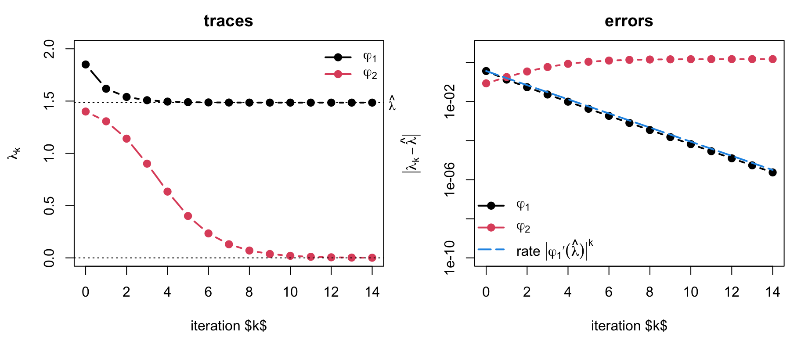
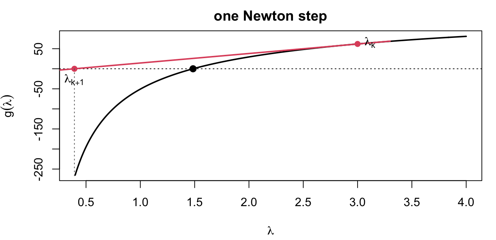
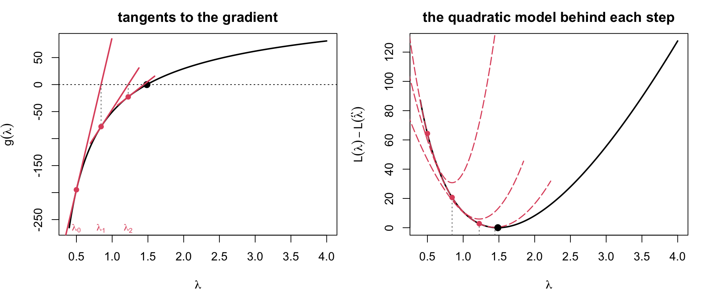
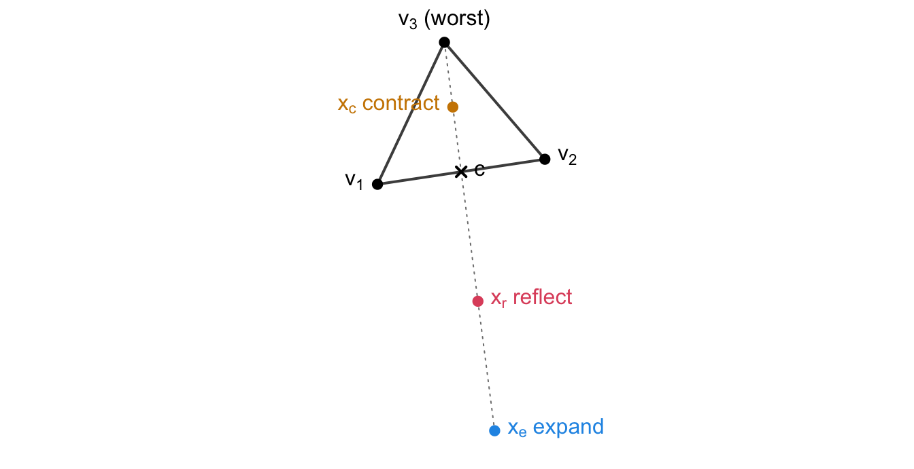

A statistical model specifies the probability (density) of data D given a parameter \theta: f(D \mid \theta).
As a function of D for fixed \theta: the sampling distribution.
As a function of \theta for fixed (observed) D: the likelihood function.
L(\theta; D) = f(D \mid \theta).
The likelihood measures how well each value of \thetaexplains the observed data. For iid data D = (x_1, \ldots, x_n),
L(\theta; D) = \prod_{i=1}^n f(x_i \mid \theta), \qquad \ell(\theta) = \log L(\theta; D) = \sum_{i=1}^n \log f(x_i \mid \theta).
We work with the log-likelihood\ell(\theta) to avoid underflow of the product and because sums are easier to differentiate.
P(y_i \mid \theta) = \theta^{y_i}(1-\theta)^{1-y_i}, so with n_1 = \sum y_i and n_0 = n - n_1,
L(\theta) = \theta^{n_1}(1-\theta)^{n_0}, \qquad \ell(\theta) = n_1\log\theta + n_0\log(1-\theta).
The negative log-likelihood and its gradient are
\mathcal{L}(\theta) = -n_1\log\theta - n_0\log(1-\theta), \qquad
g(\theta) = \mathcal{L}'(\theta) = \frac{n_0}{1-\theta} - \frac{n_1}{\theta} .
The MLE solves g(\theta) = 0 \iff \hat\theta = \dfrac{n_1}{n} = \overline y, and the curvature J(\theta) = g'(\theta) = \dfrac{n_1}{\theta^2} + \dfrac{n_0}{(1-\theta)^2} > 0 confirms a minimum of \mathcal{L}.
Under regularity conditions (satisfied by most models in practice), for iid data with true parameter \theta_*:
Consistency: \hat\theta_{\mathrm{MLE}} \to \theta_* as n \to \infty.
Asymptotic normality:
\hat\theta_{\mathrm{MLE}} \;\dot\sim\; N\!\big(\theta_*,\ [n I(\theta_*)]^{-1}\big), \qquad
I(\theta) = -E_X\!\left[\frac{\partial^2}{\partial\theta\,\partial\theta'}\log f(X \mid \theta)\right],
the expected Fisher information per observation (p \times p for a p-dimensional \theta).
Asymptotic efficiency: no consistent estimator has smaller asymptotic variance (Cramér–Rao bound).
Note n I(\theta) = E_D\big[\mathcal{L}''(\theta; D)\big] = -E_D\big[\ell''(\theta; D)\big]: the expected curvature of \mathcal{L}.
Observed and Expected Fisher Information
\theta_* is unknown, so the variance [nI(\theta_*)]^{-1} is estimated by plugging in \hat\theta. Two versions:
Observed informationJ(\hat\theta) = \mathcal{L}''(\hat\theta; D) = g'(\hat\theta) = -\sum_{i=1}^n \frac{\partial^2}{\partial\theta\partial\theta'}\log f(x_i \mid \hat\theta): the actual curvature at the MLE, no expectation needed.
By the LLN, J(\hat\theta)/n \approx I(\hat\theta). Both give
\widehat{\mathrm{Var}}(\hat\theta) \approx J(\hat\theta)^{-1} \quad\text{or}\quad [nI(\hat\theta)]^{-1}, \qquad \widehat{\mathrm{SE}}(\hat\theta_j) = \sqrt{\big[\widehat{\mathrm{Var}}(\hat\theta)\big]_{jj}} .
Computational consequence: the Hessian of \mathcal{L} at the optimum, which Newton-type optimizers compute anyway, gives the standard errors for free.
2 Univariate Optimization
The Problem
Minimize \mathcal{L}(\theta) = -\ell(\theta), \theta \in \mathbb{R}; equivalently, find a root of g(\theta) = \mathcal{L}'(\theta), or rearrange that root equation into a fixed point \theta = \varphi(\theta).
Methods differ in what they need and how fast they converge:
method
needs
convergence
fixed-point iteration
a rearrangement \theta = \varphi(\theta)
linear, if at all
bisection
g(\theta) and a sign-changing bracket
linear (halves bracket)
golden section
\mathcal{L}(\theta) only, and a bracket
linear
Newton–Raphson
g(\theta) and g'(\theta) = \mathcal{L}''(\theta)
quadratic near root
Fisher scoring
g(\theta) and I(\theta)
linear–quadratic
Every method below is illustrated on the same zero-truncated Poisson likelihood, so the pictures are directly comparable.
Running Example: Zero-Truncated Poisson
We observe only the nonzero counts of a Poisson process (X = Y \mid Y > 0, Y \sim \mathrm{Pois}(\lambda)):
P(x \mid \lambda) = \frac{e^{-\lambda}\lambda^x}{x!}\cdot\frac{1}{1 - e^{-\lambda}}, \qquad x = 1, 2, \ldots
\mathcal{L}(\lambda) = n\lambda - \sum x_i \log\lambda + n\log(1 - e^{-\lambda}) + C
g(\lambda) = \frac{n}{1 - e^{-\lambda}} - \frac{\sum x_i}{\lambda}
g'(\lambda) = \frac{\sum x_i}{\lambda^2} - \frac{n e^{-\lambda}}{(1 - e^{-\lambda})^2}.
par(mfrow =c(1, 2), mar =c(4.2, 4.2, 2.2, 1))plot(lam, nll(lam) -nll(lhat), type ="l", lwd =2, main ="negative log-likelihood",xlab =TeX("$\\lambda$"), ylab =TeX("$L(\\lambda) - L(\\hat{\\lambda})$"))abline(v = lhat, lty =3); abline(v = xbar, col =4, lty =5)legend("bottomright", bty ="n", lty =c(3, 5), col =c(1, 4), legend =c("MLE", "sample mean"))plot(lam, g(lam), type ="l", lwd =2, main ="gradient",xlab =TeX("$\\lambda$"), ylab =TeX("$g(\\lambda)$"))abline(h =0, lty =3); points(lhat, 0, pch =19, cex =1.2)
The plain sample mean overestimates\lambda because the zeros are missing; the MLE sits where the gradient crosses zero.
Fixed-Point Iteration: Two Rearrangements
The stationarity equation g(\lambda) = 0 can be written as
\frac{\overline x}{\lambda} = \frac{1}{1 - e^{-\lambda}} .
Solving for the \lambda on the left gives one rearrangement; solving for the exponential gives another:
\lambda = \overline x\,(1 - e^{-\lambda}) =: \varphi_1(\lambda),
\qquad
\lambda = -\log\!\Big(1 - \frac{\lambda}{\overline x}\Big) =: \varphi_2(\lambda) .
Both have exactly the same fixed points, \hat\lambda and the spurious root \lambda = 0, and indeed \varphi_2 = \varphi_1^{-1}. (The map is written \varphi, not g, because g is reserved for the gradient.)
Fixed-Point Iteration: The Method
Pick a rearrangement \lambda = \varphi(\lambda) and iterate
\lambda_{k+1} = \varphi(\lambda_k), \qquad k = 0, 1, 2, \ldots
Writing e_k = \lambda_k - \lambda^* and expanding \varphi about the fixed point, e_{k+1} \approx \varphi'(\lambda^*) e_k:
the iteration converges to \lambda^* when |\varphi'(\lambda^*)| < 1, and the error then shrinks by that constant factor each step — linear convergence;
it is repelled from \lambda^* when |\varphi'(\lambda^*)| > 1.
Here \varphi_1'(\lambda) = \overline x\, e^{-\lambda} and \varphi_2'(\lambda) = (\overline x - \lambda)^{-1}. Since \varphi_2 = \varphi_1^{-1}, the slopes are reciprocal at every fixed point, so at most one of the two rearrangements can converge to \hat\lambda.
Advantage: no derivatives. Disadvantage: a suitable \varphi must be found, and the rearrangement alone decides the outcome.
Fixed-Point: The Cobweb
Code
cobweb <-function(phi, x0, nstep, main) { gg <-seq(0.05, 1.9, length.out =300)plot(gg, phi(gg), type ="l", lwd =2, xlim =c(0, 1.9), ylim =c(0, 1.9),xlab =TeX("$\\lambda_k$"), ylab =TeX("$\\varphi(\\lambda_k)$"), main = main)abline(0, 1, lty =2); points(lhat, lhat, pch =19, cex =1.3)for (k in1:nstep) { x1 <-phi(x0); if (!is.finite(x1) || x1 <0) breaksegments(x0, x0, x0, x1, col =2, lwd =2) # up (or down) to the curvesegments(x0, x1, x1, x1, col =2, lwd =2) # across to the diagonalpoints(x0, x1, pch =19, col =2, cex =0.8) x0 <- x1 }}par(mfrow =c(1, 2), mar =c(4.2, 4.2, 2.4, 1))cobweb(phi1, x0 =1.85, nstep =6, main =TeX("$\\varphi_1$: converges, $|\\varphi_1'| < 1$"))cobweb(phi2, x0 =1.40, nstep =6, main =TeX("$\\varphi_2$: repelled, $|\\varphi_2'| > 1$"))

The staircase walks to the intersection of \varphi with the 45^\circ line. For \varphi_1 the crossing is shallow and each step strides toward it; \varphi_2 is the inverse map, its slope there is the reciprocal, and the iterates are pushed away from \hat\lambda toward the fixed point at \lambda = 0.
Fixed-Point: Traces of the Iterates
Code
trace_fp <-function(phi, x0, nstep) { p <- x0for (k in1:nstep) { xn <-phi(p[k])if (!is.finite(xn) || xn <=0) break p <-c(p, xn) } p}t1 <-trace_fp(phi1, 1.85, 14); t2 <-trace_fp(phi2, 1.40, 14)par(mfrow =c(1, 2), mar =c(4.2, 4.4, 2.4, 1))## (a) the iterates themselvesplot(seq_along(t1) -1, t1, type ="b", pch =19, lwd =2, ylim =c(0, 2),xlim =c(0, 14), xlab ="iteration $k$", ylab =TeX("$\\lambda_k$"), main ="traces")lines(seq_along(t2) -1, t2, type ="b", pch =19, lwd =2, col =2)abline(h = lhat, lty =3); abline(h =0, lty =3)mtext(TeX("$\\hat{\\lambda}$"), side =4, at = lhat, las =1, line =0.3, cex =0.9)legend("topright", bty ="n", lwd =2, pch =19, col =c(1, 2),legend =c(TeX("$\\varphi_1$"), TeX("$\\varphi_2$")))## (b) the errors, on a log scalee1 <-pmax(abs(t1 - lhat), 1e-16); e2 <-pmax(abs(t2 - lhat), 1e-16)plot(seq_along(e1) -1, e1, type ="b", pch =19, lwd =2, log ="y",ylim =c(1e-10, 5), xlim =c(0, 14),xlab ="iteration $k$", ylab =TeX("$|\\lambda_k - \\hat{\\lambda}|$"), main ="errors")lines(seq_along(e2) -1, e2, type ="b", pch =19, lwd =2, col =2)lines(0:14, e1[1] * (xbar *exp(-lhat))^(0:14), lty =5, col =4, lwd =2)legend("bottomleft", bty ="n", lwd =2, lty =c(1, 1, 5), pch =c(19, 19, NA),col =c(1, 2, 4), legend =c(TeX("$\\varphi_1$"), TeX("$\\varphi_2$"), TeX("rate $|\\varphi_1'(\\hat{\\lambda})|^k$")))

Left: \varphi_1 settles onto \hat\lambda within a few steps, while \varphi_2 slides past it and decays toward the spurious fixed point at zero. Right: the \varphi_1 error falls along a straight line on the log scale, with the slope predicted by |\varphi_1'(\hat\lambda)| — one fixed number of digits gained per iteration, against Newton’s doubling. The \varphi_2 error rises and then flattens at \hat\lambda, the distance from the limit 0 to the root it failed to find.
Bisection
If g is continuous and g(a), g(b) have opposite signs, a root lies in [a, b]. Evaluate g at the midpoint and keep the half that still brackets the root.
Code
bisection <-function(g, a, b, tol =1e-8) { k <-0while (b - a > tol) { m <- (a + b) /2; if (g(a) *g(m) <=0) b <- m else a <- m; k <- k +1 }c(root = (a + b) /2, iter = k)}bisection(g, 0.1, 10)
root iter
1.485204 30.000000
Guaranteed to converge; the bracket halves each step, so \log_2\big((b-a)/\text{tol}\big) \approx 30 iterations here.
Needs only g, not g'. R’s uniroot() uses a refined version (Brent’s method).
Bisection, Visualized
Code
gv <-g(lam); yr <-range(gv); pad <-0.35*diff(yr)plot(lam, gv, type ="l", lwd =2, ylim =c(yr[1], yr[2] + pad),xlab =TeX("$\\lambda$"), ylab =TeX("$g(\\lambda)$"))abline(h =0, lty =3); points(lhat, 0, pch =19, cex =1.3)a <-0.5; b <-3.6ylev <-seq(yr[2] +0.08* pad, yr[2] +0.95* pad, length.out =4)for (k in1:4) { m <- (a + b) /2segments(a, ylev[k], b, ylev[k], col =4, lwd =3) # the current bracketpoints(c(a, b), rep(ylev[k], 2), pch ="|", col =4)segments(m, ylev[k], m, g(m), lty =3, col =2) # midpoint carried down to gpoints(m, ylev[k], pch =19, col =2)if (g(a) *g(m) <=0) b <- m else a <- m}
Each bar is the bracket at one iteration; the dot is its midpoint, mapped onto g to decide which half survives. The bracket halves every step regardless of the shape of g — no faster near the root than far from it.
Golden Section Search
Works on \mathcal{L}(\theta) = -\ell(\theta) directly, without any derivative: keep a bracket [a, b] containing the minimum of a unimodal \mathcal{L} and two interior points a' < b' placed at the golden ratio (\phi \approx 0.618).
If \mathcal{L}(a') < \mathcal{L}(b') the minimum is in [a, b']; otherwise in [a', b].
The golden placement lets the surviving interior point be reused, so each step costs one new evaluation and shrinks the bracket by 0.618.
Code
golden <-function(f, a, b, tol =1e-8) { phi <- (sqrt(5) -1) /2; k <-0 x1 <- b - phi * (b - a); x2 <- a + phi * (b - a); f1 <-f(x1); f2 <-f(x2)while (b - a > tol) {if (f1 < f2) { b <- x2; x2 <- x1; f2 <- f1; x1 <- b - phi * (b - a); f1 <-f(x1) }else { a <- x1; x1 <- x2; f1 <- f2; x2 <- a + phi * (b - a); f2 <-f(x2) } k <- k +1 }c(root = (a + b) /2, iter = k)}golden(nll, 0.1, 10) # R equivalent: optimize(nll, c(0.1, 10))
The point that survives (blue) is already correctly placed for the next iteration, so only the red point costs a fresh evaluation.
Newton–Raphson: Derivation
Approximate the gradient by its tangent line at the current point \theta_k and solve for where the tangent hits zero:
g(\theta) \approx g(\theta_k) + g'(\theta_k)(\theta - \theta_k) = 0
\quad\Longrightarrow\quad
\theta_{k+1} = \theta_k - \frac{g(\theta_k)}{g'(\theta_k)} = \theta_k - \frac{\mathcal{L}'(\theta_k)}{\mathcal{L}''(\theta_k)} .

Newton–Raphson: The Tangent Steps
Code
it <-0.5# starting valuefor (k in1:3) it <-c(it, it[k] -g(it[k]) /dg(it[k]))par(mfrow =c(1, 2), mar =c(4.2, 4.2, 2.4, 1))## (a) tangents to the gradientplot(lam, g(lam), type ="l", lwd =2, main ="tangents to the gradient",xlab =TeX("$\\lambda$"), ylab =TeX("$g(\\lambda)$"))abline(h =0, lty =3); points(lhat, 0, pch =19, cex =1.2)for (k in1:3) { xt <-range(c(it[k], it[k +1])) +c(-0.15, 0.15)lines(xt, g(it[k]) +dg(it[k]) * (xt - it[k]), col =2, lwd =2)segments(it[k +1], 0, it[k +1], g(it[k +1]), lty =3, col ="grey40")points(it[k], g(it[k]), pch =19, col =2, cex =0.9)mtext(TeX(sprintf("$\\lambda_%d$", k -1)), side =1, at = it[k], line =-1, col =2, cex =0.8)}## (b) the quadratic model that each step minimizesnllc <-function(l) nll(l) -nll(lhat)plot(lam, nllc(lam), type ="l", lwd =2, main ="the quadratic model behind each step",xlab =TeX("$\\lambda$"), ylab =TeX("$L(\\lambda) - L(\\hat{\\lambda})$"))for (k in1:3) { w <-seq(it[k] -1, it[k] +1, length.out =200)lines(w, nllc(it[k]) +g(it[k]) * (w - it[k]) +0.5*dg(it[k]) * (w - it[k])^2,col =2, lwd =1.5, lty =5)segments(it[k +1], par("usr")[3], it[k +1], nllc(it[k +1]), lty =3, col ="grey40")points(it[k], nllc(it[k]), pch =19, col =2, cex =0.9)}points(lhat, 0, pch =19, cex =1.2)

Left: each red line is the tangent to g at the current iterate, followed down to the axis to give the next one. Right: the same steps seen on \mathcal{L} — the dashed parabola is the second-order Taylor expansion at \lambda_k, and \lambda_{k+1} is its vertex. As the iterates approach \hat\lambda the parabola hugs \mathcal{L} and the vertex lands essentially on the MLE.
Quadratic convergence: the error is squared each step, so the number of correct digits roughly doubles. Linear methods gain a fixed number of digits per step.
When Newton–Raphson Fails
Newton uses only local information, so it can misbehave:
Wrong curvature: if g'(\theta_k) = \mathcal{L}''(\theta_k) < 0, the step moves toward a maximum of \mathcal{L} or diverges.
Overshooting: a flat gradient (g'(\theta_k) \approx 0) gives a huge step.
Multiple roots: it converges to whichever root is nearest the start, possibly a local maximum.
The truncated Poisson overshoots from a poor start: at \lambda_0 = 3.5 the gradient is already flat, so the tangent crosses zero outside the parameter space.
Code
l0 <-3.5; l_nr <- l0 -g(l0) /dg(l0)par(mar =c(4.2, 4.2, 1.5, 1))plot(NA, xlim =c(-0.8, 4), ylim =range(g(lam)),xlab =TeX("$\\lambda$"), ylab =TeX("$g(\\lambda)$"))rect(-0.8, par("usr")[3], 0, par("usr")[4], col ="grey90", border =NA)text(-0.4, 0.55*par("usr")[4], TeX("$\\lambda < 0$"), col ="grey30", cex =0.9)lines(lam, g(lam), lwd =2); abline(h =0, lty =3); points(lhat, 0, pch =19, cex =1.2)xt <-c(l_nr -0.2, l0 +0.3)lines(xt, g(l0) +dg(l0) * (xt - l0), col =2, lwd =2)points(c(l0, l_nr), c(g(l0), 0), pch =19, col =2)mtext(TeX("$\\lambda_0$"), side =1, at = l0, line =-1, col =2, cex =0.9)mtext(TeX("$\\lambda_1$"), side =1, at = l_nr, line =-1, col =2, cex =0.9)
Safeguards: start from a robust estimate, halve the step until \mathcal{L} decreases, or fall back to bisection/golden section, which only need a bracket.
Flat Tails: The Cauchy Location Model
A single-observation Cauchy likelihood shows the same failure in pure form: \mathcal{L}(\theta) = -\ell(\theta) = \log(1+\theta^2) has gradient g(\theta) = 2\theta/(1+\theta^2), which rises, turns over at \theta = 1, then decays — the Newton step blows up wherever g is flat.
Code
nll_c <-function(t) log(1+ t^2)g_c <-function(t) 2* t / (1+ t^2)par(mfrow =c(1, 2), mar =c(4.2, 4.2, 2.2, 1))curve(nll_c, -5, 5, n =400, lwd =2, xlab =TeX("$\\theta$"), ylab =TeX("$L(\\theta)$"), main ="negative log-likelihood")curve(g_c, -5, 5, n =400, lwd =2, xlab =TeX("$\\theta$"), ylab =TeX("$g(\\theta)$"), main ="gradient: flat tails")abline(h =0, lty =3); abline(v =c(-1, 1), col =2, lty =2)
From \theta_0 = 0.5 Newton converges quadratically; from \theta_0 = 1.2, beyond the inflection point, it runs away — each step landing where the gradient is flatter still.
par(mfrow =c(1, 2), mar =c(4.2, 4.2, 2.4, 1))## (a) the two lines from the bad startl_fs <- l0 -g(l0) /nI(l0)plot(NA, xlim =c(-0.8, 4), ylim =range(g(lam)), main ="observed vs. expected curvature",xlab =TeX("$\\lambda$"), ylab =TeX("$g(\\lambda)$"))rect(-0.8, par("usr")[3], 0, par("usr")[4], col ="grey90", border =NA)lines(lam, g(lam), lwd =2); abline(h =0, lty =3); points(lhat, 0, pch =19, cex =1.2)xn <-c(l_nr -0.2, l0 +0.3); xf <-c(l_fs -0.3, l0 +0.3)lines(xn, g(l0) +dg(l0) * (xn - l0), col =2, lwd =2)lines(xf, g(l0) +nI(l0) * (xf - l0), col =4, lwd =2, lty =5)points(c(l0, l_nr, l_fs), c(g(l0), 0, 0), pch =19, col =c(1, 2, 4))legend("bottomright", bty ="n", lwd =2, lty =c(1, 5), col =c(2, 4),legend =c(TeX("Newton: slope $g'$"), TeX("scoring: slope $nI$")))## (b) the scoring path from the same startplot(lam, g(lam), type ="l", lwd =2, main ="scoring converges from the bad start",xlab =TeX("$\\lambda$"), ylab =TeX("$g(\\lambda)$"))abline(h =0, lty =3); points(lhat, 0, pch =19, cex =1.2)fs <- l0for (k in1:4) fs <-c(fs, fs[k] -g(fs[k]) /nI(fs[k]))for (k in1:4) { xt <-range(c(fs[k], fs[k +1])) +c(-0.1, 0.1)lines(xt, g(fs[k]) +nI(fs[k]) * (xt - fs[k]), col =4, lwd =1.8, lty =5)segments(fs[k +1], 0, fs[k +1], g(fs[k +1]), lty =3, col ="grey40")points(fs[k], g(fs[k]), pch =19, col =4, cex =0.9)}
Code
c(newton_step = l_nr, scoring_step = l_fs)
newton_step scoring_step
-0.3720692 1.6616773
The two lines pass through the same point with different slopes. Newton uses the actual slope g'(\lambda_0), which is nearly flat here and throws the iterate out of the parameter space; scoring uses nI(\lambda_0), an average over hypothetical data, which stays steeply positive and keeps every iterate positive. The slopes agree as \lambda_k \to \hat\lambda, so the two methods finish at the same speed.
Standard Error from the Curvature
At the MLE \hat\lambda, the observed information J(\hat\lambda) = \mathcal{L}''(\hat\lambda) = g'(\hat\lambda) and the expected information nI(\hat\lambda) both estimate the precision:
When g or g' is tedious to derive, approximate by finite differences:
g(\theta) = \mathcal{L}'(\theta) \approx \frac{\mathcal{L}(\theta + h) - \mathcal{L}(\theta - h)}{2h},
g'(\theta) = \mathcal{L}''(\theta) \approx \frac{\mathcal{L}(\theta + h) - 2\mathcal{L}(\theta) + \mathcal{L}(\theta - h)}{h^2}.
h too large: truncation error; h too small: roundoff error (large − large). Typical choice h \approx \sqrt{\epsilon}\,(1 + \lvert\theta\rvert) \approx 10^{-8} for the first derivative, \epsilon^{1/3} for the second.
R’s nlm() and optim(method = "BFGS") use numerical gradients unless you supply analytic ones; numDeriv::grad() and hessian() are more accurate.
Does the Effort Pay Off? MLE vs. the Naive Estimator
Simulating many truncated samples shows the naive estimator’s bias never vanishes — it is the wrong model, not too little data — while the MLE is centred on the truth.
Code
mle_nzp <-function(n_obs)uniroot(function(l) length(n_obs) / (1-exp(-l)) -sum(n_obs) / l,c(1e-6, 50), tol =1e-10)$rootsim_nzp <-function(lambda, n_gen =200, B =500)vapply(1:B, function(b) { yb <-rpois(n_gen, lambda); nb <- yb[yb >0]c(naive =mean(nb), mle =mle_nzp(nb)) }, c(naive =0, mle =0))est <-sim_nzp(1.5)par(mfrow =c(1, 2), mar =c(4.2, 4.2, 2.2, 1))for (m inc("naive", "mle")) { hist(est[m, ], breaks =25, col ="grey90", xlim =range(est),xlab =TeX("$\\hat{\\lambda}$"),main =sprintf("%s, bias = %.3f", m, mean(est[m, ]) -1.5))abline(v =1.5, col =2, lwd =2, lty =2) }
The naive estimator’s bias grows as \lambda shrinks, since more mass sits on the discarded zero; the MLE’s spread matches the information-based standard error from two slides ago.
3 Multivariate Newton–Raphson and Fisher Scoring
Gradient and Hessian
For \theta = (\theta_1, \ldots, \theta_p)', the gradient and Hessian of \mathcal{L} are
g(\theta) = \nabla\mathcal{L}(\theta) = \begin{pmatrix}\partial\mathcal{L}/\partial\theta_1 \\ \vdots \\ \partial\mathcal{L}/\partial\theta_p\end{pmatrix}, \qquad
H(\theta) = \nabla^2\mathcal{L}(\theta) = \left(\frac{\partial^2\mathcal{L}}{\partial\theta_i\,\partial\theta_j}\right)_{p\times p} .
g points in the direction of steepest ascent of \mathcal{L} and is perpendicular to the contour through \theta; every method below moves along -g.
H describes the local curvature. At a local minimum it is positive semidefinite; if it is positive definite, the minimum is strict and locally unique. Near the minimum, \mathcal{L} is well approximated by a quadratic, so H determines the shape of the contours. At the MLE, H(\hat\theta) = J(\hat\theta), the observed information.
Gradient and Hessian: Illustration
Quadratic: \mathcal{L}(\theta) = \tfrac12(\theta - u)'A(\theta - u), A positive definite, g(\theta) = A(\theta - u), H = A (constant). Contours are ellipses centred at u. Write A = Q\Lambda Q':
axes point along the eigenvectors of Q;
half-length along axis j is \propto 1/\sqrt{\lambda_j}, so a large eigenvalue means high curvature and a short, well-determined direction;
Gradient arrows (green) are perpendicular to contours and point uphill, away from u; a descent method steps along -g, which need not point at u unless the ellipse is a circle.
Near its minimum any smooth \mathcal{L} looks like this, with A = \nabla^2\mathcal{L}(\hat\theta) = J(\hat\theta).
Logistic Regression: Newton = Fisher Scoring = IRLS
H = X'WX is positive semi-definite, so \mathcal{L} is convex: any stationary point is the global minimum.
The Hessian does not involve y, so its expectation equals itself: Newton–Raphson and Fisher scoring coincide.
The update
\beta_{k+1} = \beta_k - (X'W_kX)^{-1}X'(\pi_k - y) = (X'W_kX)^{-1}X'W_k z_k,
z_k = X\beta_k + W_k^{-1}(y - \pi_k),
is a weighted least squares fit of the working responsez_k: iteratively reweighted least squares (IRLS), which is how glm() fits all generalized linear models.
Caveat: if the classes are perfectly separable, \mathcal{L} decreases forever and the MLE does not exist (\lvert\hat\beta\rvert \to \infty).
Logistic Regression in R
Code
n <-500; X <-cbind(1, rnorm(n), rnorm(n)); beta_true <-c(-0.5, 1, -2)y <-rbinom(n, 1, plogis(X %*% beta_true))nll_lr <-function(b) sum(log1p(exp(X %*% b)) - y * (X %*% b))g_lr <-function(b) crossprod(X, plogis(X %*% b) - y)H_lr <-function(b) { p <-plogis(X %*% b); crossprod(X, X *drop(p * (1- p))) }newton_mv <-function(g, H, b0, tol =1e-8, maxit =50) { path <-drop(b0)for (k in1:maxit) { b1 <- b0 -solve(H(b0), g(b0)); path <-rbind(path, drop(b1))if (max(abs(b1 - b0)) < tol)return(list(est =drop(b1), iter = k, se =sqrt(diag(solve(H(b1)))), path = path)) b0 <- b1 }}fit <-newton_mv(g_lr, H_lr, rep(0, 3)); fit$iter
This is the summary(glm(...)) table. The variance comes from the same Hessian that drove the Newton iterations.
The Need to Robustify Newton–Raphson
The Newton step d_k = -H_k^{-1} g_k, with g_k = \nabla\mathcal{L}(\theta_k) and H_k = \nabla^2\mathcal{L}(\theta_k), solves the local quadratic model exactly. Two things can go wrong away from the solution:
The direction may not descend.g_k^\top d_k = -g_k^\top H_k^{-1} g_k < 0 requires H_k \succ 0. Where \mathcal{L} is not convex, H_k may be indefinite or singular and d_k can point uphill.
The unit step may overshoot. Even with H_k \succ 0, the quadratic model is trustworthy only near \theta_k; \alpha_k = 1 can increase \mathcal{L}.
The two failures are independent and need separate remedies: one fixes the direction, the other the length.
Robustification of the Hessian
Replace H_k by a positive definite \tilde H_k and solve \tilde H_k d_k = -g_k.
Shift by a multiple of the identity. With \lambda_{\min} the smallest eigenvalue of H_k,
\tilde H_k = H_k + \tau I, \qquad
\tau = \max\left(0,\; \delta - \lambda_{\min}\right), \qquad
\delta = 10^{-3}\lambda_{\max} .
Eigenvectors are unchanged and every eigenvalue is shifted by \tau. As \tau \to \infty the direction rotates toward -g_k, so the method interpolates between Newton and steepest descent.
Spectral modification. With H_k = V \Lambda V^\top, replace \lambda_i by \max(|\lambda_i|, \delta). This reverses negative-curvature directions rather than damping them, so the step moves away from a saddle.
Where H_k \succ 0 already, \tau = 0 and \tilde H_k = H_k: the refinement is inactive near a well-behaved minimum.
Step length: backtracking and line search
Given a descent direction, choose \alpha_k by an inexact search along \phi(\alpha) = \mathcal{L}(\theta_k + \alpha d_k).
Backtracking. Start at \alpha = 1 and set \alpha \leftarrow \rho\alpha with \rho = \tfrac12 until Armijo holds. Simple, and it accepts \alpha_k = 1 whenever the full Newton step is acceptable.
Curvature (Wolfe) condition.
g(\theta_k + \alpha d_k)^\top d_k \ \ge\ c_2\, g_k^\top d_k,
\qquad c_2 = 0.9,
which rules out steps that are too short. Backtracking alone cannot enforce it, since it never lengthens the trial step. The condition matters for conjugate gradient and is what keeps s_k^\top y_k > 0, hence the BFGS update well defined.
The safeguarded algorithm
At \theta_k: compute g_k, H_k; form \tilde H_k \succ 0; solve \tilde H_k d_k = -g_k; find \alpha_k from \alpha_0 = 1 by line search; set \theta_{k+1} = \theta_k + \alpha_k d_k.
Both safeguards are needed, and both switch themselves off:
near a minimum
far away / indefinite
\tau
0
> 0, direction rotates toward -g_k
\alpha_k
1
< 1 (or > 1 under Wolfe)
Quadratic convergence is therefore retained locally, while sufficient decrease at every iteration gives convergence from remote starting points. This is safeguarded Newton, not “Newton–Raphson” in the textbook sense — and not what nlm() runs, which globalizes with a trust region.
4 Gradient-based Methods
What If the Hessian Is Unavailable or Too Big?
method
uses
per-iteration cost
typical use
Nelder–Mead
\mathcal{L} only
O(p) evaluations
small p, non-smooth or noisy \mathcal{L}
gradient descent + line search
g
O(p) + line search
large p
conjugate gradient
g
O(p) + line search
large p, quadratic-like \mathcal{L}
quasi-Newton (BFGS, L-BFGS)
g, builds \approx Hessian
O(p^2) / O(mp)
default general-purpose
Newton / Fisher scoring
g, H
O(p^3)
moderate p, gives SEs
All are available through optim(par, fn, gr, method = ...) in R. Convention below: minimize\mathcal{L}(\theta) = -\ell(\theta), with g = \nabla\mathcal{L}.
Gradient Descent with Line Search
Move in the direction of steepest descent d_k = -g(\theta_k), choosing the step length \alpha_k by a line search:
\theta_{k+1} = \theta_k + \alpha_k d_k, \qquad \alpha_k = \arg\min_{\alpha > 0} \mathcal{L}(\theta_k + \alpha d_k) .
Exact line search: a univariate minimization (golden section / optimize) along the ray.
Inexact (backtracking, Armijo): start with \alpha = 1 and halve until \mathcal{L}(\theta_k + \alpha d_k) \le \mathcal{L}(\theta_k) + c\,\alpha\,g(\theta_k)'d_k (a “sufficient decrease”).
Code
grad_descent <-function(nll, g, x0, maxit =1000, tol =1e-8) { path <- x0for (k in1:maxit) { d <--g(x0); a <-optimize(function(a) nll(x0 + a * d), c(0, 10))$minimum # exact line search x1 <- x0 + a * d; path <-rbind(path, x1)if (sqrt(sum((x1 - x0)^2)) < tol) break x0 <- x1 }list(par = x1, iter = k, path = path)}
Why Gradient Descent Zig-Zags
With exact line search, consecutive directions are orthogonal (g(\theta_{k+1})'d_k = 0), so on elongated contours the path zig-zags across the valley:
The number of iterations grows with the condition number of the Hessian (ratio of largest to smallest eigenvalue).
Conjugate Gradient
Fix the zig-zag by making each new direction conjugate to the previous ones with respect to the Hessian Q: d_i'Qd_j = 0 for i \ne j. For a quadratic \mathcal{L}(\theta) = \tfrac12\theta'Q\theta - b'\theta, minimizing along p such directions reaches the exact minimum in at most p steps.
The nonlinear version builds directions from gradients only:
d_0 = -g_0, \qquad d_{k+1} = -g_{k+1} + \beta_k d_k, \qquad
\beta_k^{FR} = \frac{g_{k+1}'g_{k+1}}{g_k'g_k}\ \text{(Fletcher–Reeves)}, \quad
\beta_k^{PR} = \frac{g_{k+1}'(g_{k+1} - g_k)}{g_k'g_k}\ \text{(Polak–Ribière)},
with \theta_{k+1} = \theta_k + \alpha_k d_k from a line search and g_k = g(\theta_k) = \nabla\mathcal{L}(\theta_k).
Memory: only two vectors. No matrix ever formed. Ideal for very large p.
Restart with d = -g_k every p iterations, since conjugacy degrades on non-quadratic \mathcal{L}.
Conjugate Gradient in R
Code
conj_grad <-function(nll, g, x0, maxit =1000, tol =1e-8, restart =length(x0)) { g0 <-g(x0); d <--g0; path <- x0for (k in1:maxit) { a <-optimize(function(a) nll(x0 + a * d), c(0, 10))$minimum x1 <- x0 + a * d; g1 <-g(x1); path <-rbind(path, x1)if (sqrt(sum(g1^2)) < tol) break beta <-if (k %% restart ==0) 0elsemax(0, sum(g1 * (g1 - g0)) /sum(g0^2)) # Polak-Ribiere+ d <--g1 + beta * d; x0 <- x1; g0 <- g1 }list(par = x1, iter = k, path = path)}cg <-conj_grad(nllq, gq, c(2, -1.8))par(pty ="s", mar =c(4, 4, 2, 1)); contour(seq(-2, 2, l =80), seq(-2, 2, l =80), z, nlevels =15, main =sprintf("conjugate gradient, %d iterations", cg$iter))lines(gd$path, type ="b", col =2, pch =19, cex =0.6); lines(cg$path, type ="b", col =4, pch =19, lwd =2)legend("topleft", c("gradient descent", "conjugate gradient"), col =c(2, 4), lwd =2, bty ="n")
Quasi-Newton: BFGS
Between gradient methods and Newton: build an approximation B_k \approx \nabla^2\mathcal{L} from successive gradient differences s_k = \theta_{k+1} - \theta_k, y_k = g_{k+1} - g_k, via a rank-two update that keeps B_k positive definite. Steps are d_k = -B_k^{-1}g_k with a line search.
sqrt(diag(solve(fits$BFGS$hessian))) # SEs from the numerically computed Hessian at the optimum
[1] 0.1216455 0.1298958 0.1790956
optim(..., hessian = TRUE) returns a finite-difference Hessian at the solution, so standard errors are available even for gradient-only methods.
5 Stochastic Gradient Descent
Motivation: Large n
For iid data the negative log-likelihood and its gradient are sums over observations:
\mathcal{L}(\theta) = \sum_{i=1}^n \mathcal{L}_i(\theta), \qquad g(\theta) = \sum_{i=1}^n g_i(\theta), \qquad g_i = \nabla\mathcal{L}_i .
Every method so far needs the full gradient, an O(np) pass through all data, per iteration (and Newton needs O(np^2) for the Hessian). With n in the millions and p in the millions (neural networks), even one full gradient is expensive.
Idea.g_i(\theta) for a randomly chosen i is an unbiased estimate of the average gradient:
E_i\big[g_i(\theta)\big] = \frac{1}{n}\,g(\theta).
A noisy but cheap gradient estimate is enough to make progress — a Monte Carlo idea applied to optimization.
The SGD Algorithm
For t = 1, 2, \ldots:
Sample an index i_t uniformly from \{1, \ldots, n\} (or shuffle the data and cycle through it; one pass is an epoch).
Update in the descent direction of that single observation’s negative log-likelihood:
\theta_{t+1} = \theta_t - \gamma_t\,g_{i_t}(\theta_t).
Mini-batch SGD averages the gradient over a batch B_t of m observations (m = 32–512 typical):
\theta_{t+1} = \theta_t - \gamma_t\,\frac{1}{m}\sum_{i\in B_t}g_i(\theta_t),
reducing the variance by 1/m at m times the cost, and using vectorized/GPU arithmetic.
The learning rate\gamma_t replaces the line search (a line search would need full-data evaluations).
Learning Rate and Convergence
Because the gradient is noisy, a constant \gamma makes \theta_tbounce around the optimum with variance \propto \gamma. Robbins–Monro (1951): convergence to the optimum is guaranteed if
\sum_t \gamma_t = \infty \quad\text{and}\quad \sum_t \gamma_t^2 < \infty, \qquad\text{e.g. } \gamma_t = \frac{\gamma_0}{1 + t/t_0} .
\gamma too large: divergence or persistent noise. \gamma too small: painfully slow.
Convergence is only sublinear, far slower than Newton per iteration — but each iteration costs O(p) instead of O(np), and early progress is fast.
Common refinements: momentum (average past gradients), Adam (per-coordinate adaptive rates), averaging the iterates \overline\theta_T = \frac1T\sum_t\theta_t (Polyak–Ruppert), which restores the \sqrt n-efficiency of the MLE.
A Smaller Logistic Regression, for SGD
Let’s apply SGD to logistic regrression.
Code
log1pexp <-function(u) pmax(u, 0) +log1p(exp(-abs(u)))nll_g_info <-function(b, r, z) { u <- b[1] + b[2] * z; p <-plogis(u); w <- p * (1- p)list(nll =-sum(u * r -log1pexp(u)), # L(beta)g =c(sum(p - r), sum(z * (p - r))), # g(beta) = grad Linfo =matrix(c(sum(w), sum(z * w), sum(z * w), sum(z * z * w)), 2, 2))}nll_logistic <-function(b, z, r) { u <- b[1] + b[2] * z; -sum(u * r -log1pexp(u)) }mle_logistic_nr <-function(b0, no_iter, r, z) { out <-matrix(NA_real_, no_iter +1, 3, dimnames =list(NULL, c("beta0", "beta1", "nll"))) b <- b0for (i inseq_len(no_iter +1)) { q <-nll_g_info(b, r, z); out[i, ] <-c(b, q$nll)if (i > no_iter) break step <-tryCatch(solve(q$info, q$g), error =function(e) rep(NA_real_, 2))if (any(!is.finite(step))) break b <- b - step } out}set.seed(1)n2 <-200; z2 <-sort(runif(n2, -2, 2)); r2 <-rbinom(n2, 1, plogis(1.5* z2))logit_nlm <-nlm(nll_logistic, c(0, 0), z = z2, r = r2, hessian =TRUE)logit_nlm$estimate
[1] -0.2725325 1.5034237
Example: SGD for Logistic Regression in R
Code
sgd_logistic <-function(z, r, b0, gamma0 =0.5, t0 =100, epochs =30, batch =10) { n <-length(z); b <- b0; t <-0; path <- b0for (e in1:epochs) { idx <-sample(n)for (s inseq(1, n, by = batch)) { i <- idx[s:min(s + batch -1, n)] t <- t +1 u <- b[1] + b[2] * z[i] p <-plogis(u) gb <-c(sum(p - r[i]), sum(z[i] * (p - r[i]))) /length(i) # batch gradient of L b <- b - gamma0 / (1+ t / t0) * gb path <-rbind(path, b) } }list(est = b, path = path)}set.seed(2)beta_true2 <-c(0, 1.5)sg <-sgd_logistic(z2, r2, c(0, 0))rbind(sgd = sg$est, nlm = logit_nlm$estimate, truth = beta_true2)
Newton–Raphson needed 7 full-data passes; SGD made 600 cheap updates over 5 epochs and lands near the MLE with residual noise.
Per data pass, Newton–Raphson is far more efficient here (n = 500, p = 3); SGD earns its keep when one full gradient — or the O(p^3) Hessian solve — is prohibitively expensive.
6 Nelder–Mead (Simplex Method)
Overview
Maintains a simplex of p+1 points (a triangle in 2D) and moves it downhill using only function values:
Order the vertices f(\theta_{(1)}) \le \cdots \le f(\theta_{(p+1)}); let \overline\theta be the centroid of the best p.
Reflect the worst vertex through \overline\theta; if the reflected point is the new best, try expanding further.
If reflection is poor, contract toward \overline\theta; if that also fails, shrink all vertices toward the best.
Robust and derivative-free (R’s optim default), but slow in high dimensions and offers no standard errors.
Nelder–Mead: The Simplex Moves
Golden section needs a bracket, which exists only in one dimension. Nelder–Mead generalizes the idea: keep d+1 points (a simplex) in \mathbb{R}^d and replace the worst one at each iteration, using function values only — no derivative, no bracket.
Order the vertices f(v_1) \le \cdots \le f(v_{d+1}), let c be the centroid of all but the worst, and try in turn
x_r = c + \alpha(c - v_{d+1}), \quad
x_e = c + \gamma(x_r - c), \quad
x_c = c + \rho(v_{d+1} - c),
with the R defaults \alpha = 1, \gamma = 2, \rho = \sigma = 1/2. If even x_c fails, shrink every vertex halfway toward v_1.

Summary
needs
strength
weakness
bisection / golden section
bracket
always converges
1-D only, linear
Newton–Raphson
g, H = \nabla^2\mathcal{L}
quadratic convergence, SEs from Hessian
can diverge; O(p^3)
Fisher scoring / IRLS
g, I(\theta)
positive-definite steps; GLMs
needs expectations
Nelder–Mead
\mathcal{L}
derivative-free
slow, small p
gradient descent / CG / BFGS
g
scales to large p
line search; ill-conditioning
SGD
g_i
scales to large n and p
noisy, tuning of \gamma_t
\mathcal{L} is approximately quadratic near the MLE (asymptotic normality); every method above exploits that, and its curvature J(\hat\theta) at the optimum delivers the standard errors.